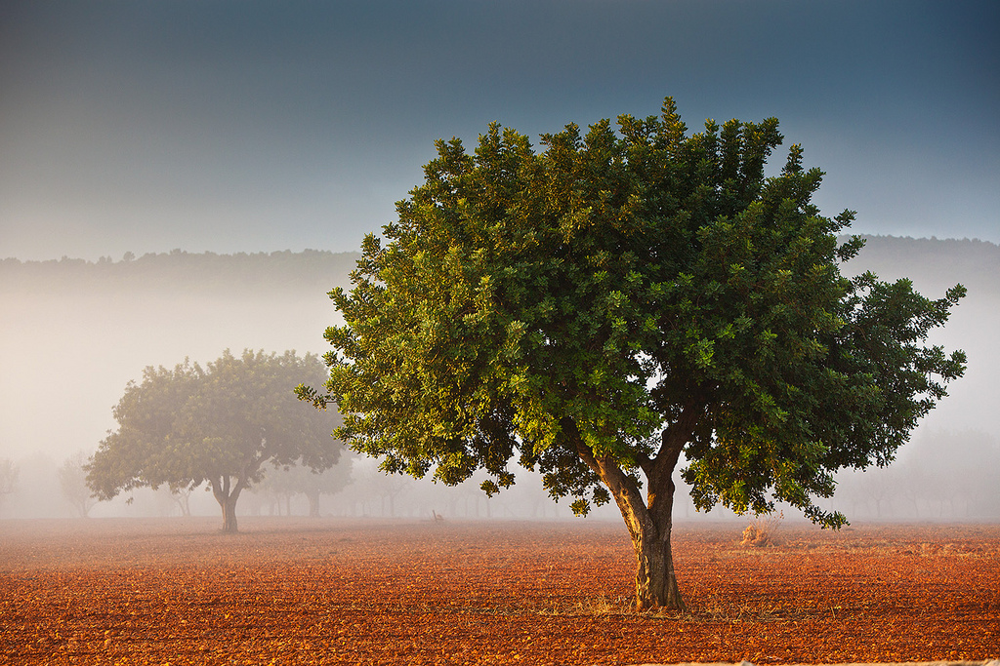

Nie kochamy jak kwiaty
O drzewa życia, kiedy ukoi was zima?
Skąd bierze się w nas gwałtowność uczuć? Niecierpliwość spojrzenia? Huragan umysłu i serca? Dlaczego nie potrafimy zachwycić się chwilą, cieszyć się jej radosnym trwaniem, nie myśląc o ulotnym kresie? Dlaczego próbujemy ją powstrzymać, żądając zapewnienia, że nie zniknie?
Cóż to za radość, którą nie można się cieszyć? Jak łatwo zranić niewinność zachwytu? Dlaczego zależy nam bardziej na czystej świadomości szczęścia niż na szczęścia odczuwaniu?
W „Elegiach duinejskich” pojawia się wspaniała fraza:
Spójrz, nie kochamy jak kwiaty, kwiaty jedynie z jednego
roku; kiedy kochamy, wlewa się w nasze żyły
sok z niepamiętnych czasów.
Czyż taka jest prawdziwa natura naszych uczuć? Niecierpliwość? Niepewność? Niezrozumienie? Czy zachwycając się chwilą musimy sięgać wstecz aż do prapoczątków, myśleć o wszelkich przeszłych i przyszłych zachwytach? „Nie znamy konturu uczuć — jak pisze poeta — a tylko to, co je tworzy z zewnątrz”. Przejrzystość, którą się wie, wie nieskończenie i nie pragnie. Przynaglamy się, by dopełnić istnienia. Chcemy je zmieścić w naszych zwyczajnych dłoniach, w przepełnionym spojrzeniu i w niemym sercu. Chcemy być nim, najchętniej wszystko zachować na zawsze.
A jednak los nie pozwala nam o sobie zapomnieć. Każdego dnia przeszywa nas echo słów z „Sonetów do Orfeusza”:
Każde miejsce szczęśliwe jest dzieckiem lub wnukiem rozstania.